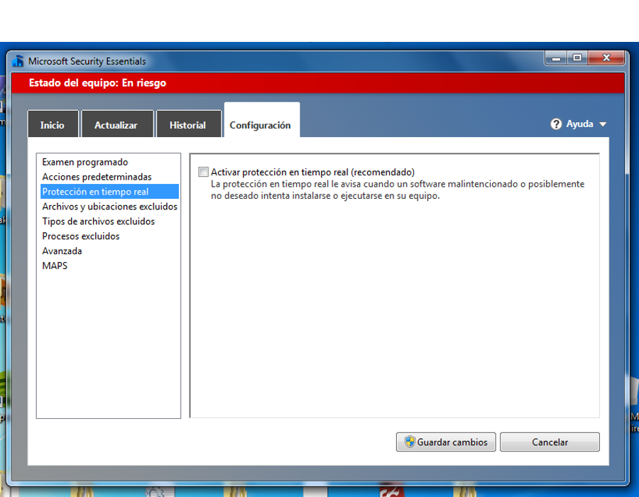
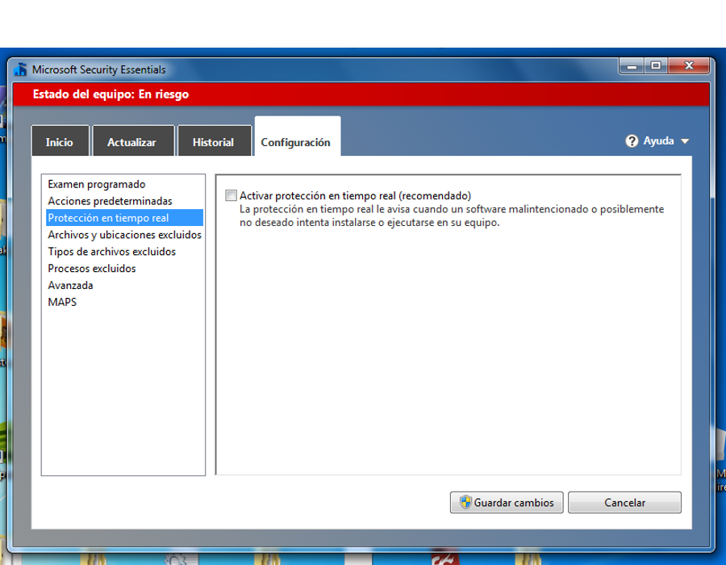

Taller Windows 7
Seguridad
Actualización del sistema y seguridad
Apreta la tecla → para avanzar.

Seguridad

Sabéis que hoy en día el ordenador es una máquina que se utiliza para cosas importantes, y por tanto conviene tomarse muy en serio la seguridad de los datos que en ella se almacenan.
- Amenazas. Virus, troyanos, gusanos, malware, adware, etc.
- Privacidad e información confidencial. No nos damos cuenta pero haciendo uso del ordenador estamos exponiendo cada vez más información sensible de nosotros y nuestra familia que requiere una protección importante.
Actualización del sistema
Windows 7 incorpora un sistema de actualizaciones del sistema automáticas, que vienen a corregir problemas de seguridad o de estabilidad del sistema y que se aplican de manera transparente.
- Totalmente recomendables. Las actualizaciones son 100% seguras ya que están certificadas por Microsoft.
- Importantes y opcionales. Las actualizaciones importantes se instalarán solas, las opcionales deberemos ser nosotros las que confirmemos su instalación.

Cambia de foto con las teclas: ↑ y ↓
Windows Firewall

El firewall es el guardián de nuestro equipo, encargado de permitir el acceso a nuestro equipo sólo a aquellas peticiones que hayan sido previamente autorizadas.
- Firewall en una conexión pública. Denegamos cualquier petición de acceso a nuestro equipo.
- Imagen de fondo. Podemos cambiar el Wallpaper, e incluso definir varias imágenes y hacer que cambien cada intervalo de tiempo.
- Imagen de usuario. Podemos cambiar la imagen de nuestro usuario en el sistema.


Cambia de foto con las teclas: ↑ y ↓
Antivirus
Un antivirus es un programa de detección y prevención de amenazas de seguridad al sistema operativo, que funciona en segundo plano vigilando la seguridad del equipo.
- Gratuitos o de pago Existe un gran número de antivirus, los más famosos requieren la compra de una licencia anual, otros son gratuitos.
- Función de escaneo y en tiempo real. Pueden escanear nuestro ordenador en busca de una amenaza ya activada o latente en el sistema, o pueden estar vigilando de manera continua
Cambia de foto con las teclas: ↑ y ↓
Microsoft Security Essentials

Es un antivirus gratiuito que nos proporciona microsoft para protegernos contra las principales amenazas de la red.
- Protección contra virus. El MSE es capaz de actualizarse y protegernos de las últimas amenazas que puedan aparecer en la red.
- Protección contra spyware o malware. Nos defenderá de todas las variantes de virus, de las más peligrosas a las más inocuas.
Cambia de foto con las teclas: ↑ y ↓
Microsoft Security Essentials
Básicamente no es más que un programa de antivirus que se encarga de comprobar que nuestro equipo no tuviera ya una infección, y nos protege para que no se nos infecte.
- Escaneo programado. Podemos pasar un escaneo a todas las unidades de disco en busca de posibles amenazas a la seguridad de nuestro equipo. Cuando las detecte nos permitirá eliminarlas.
- Protección en tiempo real. Cada cosa que bajemos de Internet y la pongamos en marcha, previamente tendrá que pasar por el antivirus para comprobar que está limpia.
 

Cambia de foto con las teclas: ↑ y ↓
Windows Defender
Herramienta de protección ante software no deseado (Spyware), desarrollado por Microsoft en paralelo y de manera complementaria a Microsoft Security Essentials.
- Spyware. Programas que se instalan sin consentimiento en el equipo, realizando diferentes acciones como recopilación y envío información o mostrar anuncios no solicitados (popups).
- No realiza escaneos en tiempo real. Sólo escaneos programados.
Cambia de foto con las teclas: ↑ y ↓